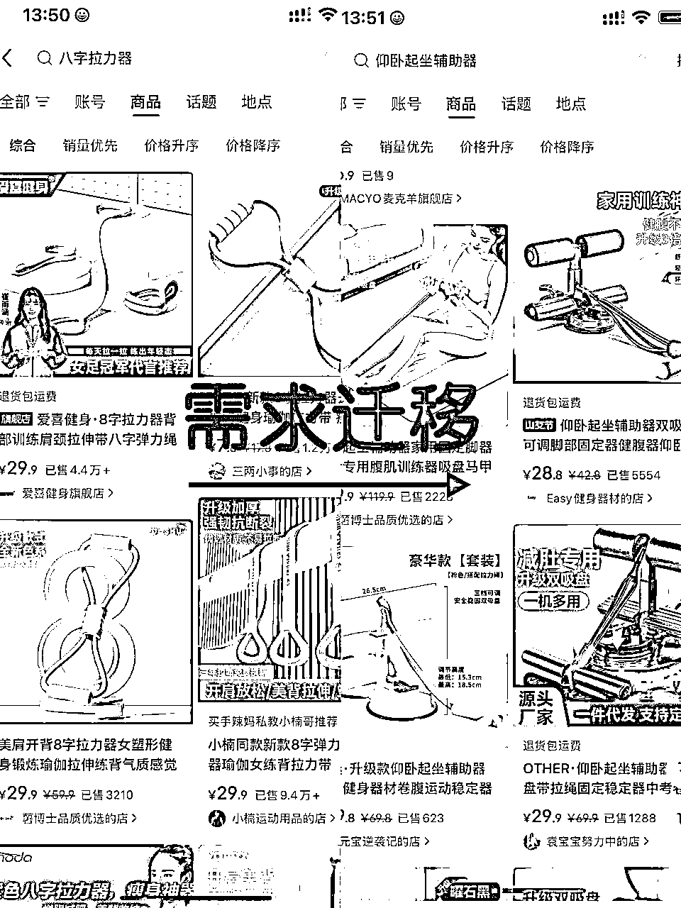

来源：https://ncnzfd0tar04.feishu.cn/docx/IanKdnesXolen0xSLr3cVjBRnTc
hello，大家好，我是小加里奥，04年是一名大三学生，加入生财半年，去年5月开始做小红书电商，运营过多个小红书电商账号，总GMV25W＋，利润10W＋。
我在一年前只是一个天天刷手机不听讲的普通学生，觉得大学课业无聊，有很多条条框框，并没有参与学校的体系。因为我是一个闲不下来的人，去年就想为自己寻找一个新的机会。
24年从朋友那里听说这个项目，当时半信半疑，因对内容电商的认知基本为0，凭着一腔热血和蛮力入了场，开始也踩过许多坑，但在一个月后成功爆单，一个多月打出1.7万单的成绩，赚到了人生中第一桶金，加入了生财，在后几个月的不断实操中，形成了自己对这个项目的认知体系，心态也有了不错的提升，现在继续选择深耕小红书电商。
这篇文章是想和大家分享一下我在小红书电商的重要环节分析与我的选品方法
内容简单易懂，也有心理上的分析，毕竟我也是这么过来的，新手朋友们也可以放心阅读，希望能帮助更多的人
目录如下：
1、小红书电商拿结果最重要的环节分析
2、选品定生死——我为什么能选到多个爆品
3、做小红书电商的核心
4、结语
小红书电商是在小红书里开通店铺上架商品，再发布笔记促进成交，目前的主流笔记形式是混剪与原创实拍，形成站内闭环，是一个非常适合普通人且当下依然有红利的项目。
选品是我认为最重要的环节，自然流的情况下，一个好的品，随手寻找发布的视频也能出单，一个烂的品，就算花费大量时间拍摄剪辑，单量的上限也是非常低的。
小红书是千人千面的，这决定了不同品在不同的号上都有不同的表现，比如说报恩雨伞，我在第一个号上从来不破500小眼睛，在第二个号第一篇就有4K。所以必须找出号的最“适配”的品和笔记模板。
一个合格的供应商首先得是产品的质量没问题，不会多次因为质量问题产生客诉而导致差评和退货，第二就是解决问题态度好速度快，不推诿扯皮。处理售后时态度必须好，能补偿就补偿，避免多次与顾客发成摩擦导致负反馈，店铺负反馈，极其影响流量和心态，能避免就提前避免。
小红书电商中，选品定生死。选到对的品其实不难，能否打爆，取决于多个维度。
排在第一位的是时间，很多人会选择去跟品，但是后进场，就是在这个品一堆人爆了，你觉得他不错，你毅然决然带着你剪的视频入场，发现遍地都是同行，大概率坚持不了多久就放弃，
这样跟能爆吗？能爆，但根据我的经验大概率会在半个月后，坚持难，半月后你又继续吭哧吭哧打着新品，刷到老品又爆了，懊悔拍着大腿。
前两个方法是帮助大家熟悉小红书选品，后两个方法旨在帮助大家增强选品的前瞻性，能做到在这个商品不卷的时候入场，大大提高打爆的概率。
抖音的一些爆品在小红书同时也有爆率。
相信大家一定对这个方法并不陌生，这里给大家再讲细一些，抖音开通带货功能之后，点击创意中心，就可以进行选品。这个榜单里有非常多的类目可以选，我建议小白可以重点关注：智能家居、运动户外、美妆、个护家清、3C数码家电等内容。
我们以智能家居为例，从上往下滑是近一个小时的爆款带货视频榜单。
新手对小红书电商的目标人群的重点需求和什么品容易在小红书上爆不清楚的朋友们，开始建议把播放量＋过万的视频对应的商品，全都在小红书里搜索一遍（如果有时间可以把所有的类目都看一遍）。
看有没有低粉爆款视频，看商品主页有没有高销量的链接，如果没有就放弃，如果有就看看他的笔记制作难度，是否是你可以做到。
这个过程3—5天左右，旨在可以帮助大家快速积累小红书爆品的画像，如果你是以副业入局，没有时间操作，剪辑或拍摄就要耗费你大量时间的话，那么在后续的实操选品当中，因为人的惰性，及其容易漏品。
当然做完这个阶段大家依然要保持每天2-3次打开创意中心刷15-30分钟的习惯，尽可能地去多搜一点符合小红书人群定位的品和你认为好的品。因为在小红书打品中，时间就是金钱，第一个吃螃蟹的往往就是天才。
跟近期低粉爆款选品能大大提升打出爆品的概率
小红书站内搜品的时候，会刷到一些低分爆款的电商账号，粉丝小于三千，但是他的品爆了，销量>500。多刷他们的内容并关注他们的账号，当系统识别到你喜欢这类内容的时候，会给你推送其他的低粉爆款的带货视频，关注这个账号，把这个品记录下来。
这种小号的养成时间较长，在10天左右，大家在此期间最好可以控制住不要刷其他内容，因为会让你的主页推送混乱。
我自己的小号养成了之后但是刷了很多娱乐内容导致低粉爆款视频出现率大大降低，而我另一个号只刷低粉，平均一天能选出三个可以测的近期爆品。
如果你在当下就只看到这个好品，且在一周之内爆的话可以考虑跟下。
同时如果这个账号卖爆了很多品，说明他的品感不错，你可以持续关注他的上新，他一起量你就跟，几率更大
这时候很多人就问了，这个创意中心的品千变万化，我刷也刷不完啊!头都晕了！
找到爆款产品背后的爆款需求，用需求锁定好品
这里给大家一个加快定位的方法，这个方法旨在帮助大家能在尽可能早的时间选到之后会大爆，和一些极度内卷的品（比如说每分钟几乎都有新视频发出来，打爆十分困难）。纯小白不建议一开始就用，在吃透上两个选品方法的朋友可以试试。
小红书的人群画像是相对年轻的女性，她们全年的需求变化不大。
给大家举几个很简单的例子，女生希望自己脸更好看。会选择各种各样的按摩梳，女生希望自己的身材更好，会选择八字拉力器、脚蹬拉力器、壶铃，女生希望自己头发更美，于是出现了卷发棒，鬃毛梳、松塔梳、鹿角梳。这些品千变万化，但他们总是对应这这几个不变的的需求。
当我看到了八字拉力器的时候，背后就是女生变瘦的需求，那当仰卧起坐辅助器这个品在创意中心出现。
搜索后，看到在小红书有销量有热度，直接跟，成功的机率会大大提升，这个时候大概率同行都没有反应过来（当然要在辅助器这个品出来的第一时间去跟，而不是已经在创意中心挂好久了）

爆过的品会有概率重新再爆。
如果一个品之前爆过，或几个月前或半年前，创意中心重新出现，时间2天以上，并且视频流量很好。不要多去思考平台还会不会给他推流，尝试去搜，因为抖音突然出来就证明的这个品的需求还在，和近期出现了新素材，就可试试。
只要需求还在，老品新爆，在小红书平台也是屡见不鲜的。
当然，这个方法也不是你选一个就能爆一个，如果小红书没有热度和销量，可以把他列入观察对象，每隔三天搜索一次。
小红书用户们每个季节/时间点都有她们的必需品，每年周而复始，产生了周期。抓住周期，提前布局。
比如说，夏天快到了，好热呀，带个防晒面罩！冬天到啦，好冷穿个羽绒服，那要用清洁湿巾擦擦！
防晒面罩作为小红书夏季特有的刚需品，基本每年的夏季热度都很高，创意中心爆款出现在2月，小红书爆款差不多出现在同期，在2月份选到就布局，起来的概率一定是比5.6月高很多的。
大家看到这类品，给大家两个测的思路。同时关注小红书站内热度和创意中心1、如果这个品是在创意中心出现，小红书站内去年爆的或者是差不多款式，建议先列入重点观察对象，一天刷一次；
2、如果这个品有低粉账号同行打出了近期爆款，那么非常建议去试一下，入场时间大概只是仅次于去年坚持下来的同行。
这里不想谈一些细枝末节的操作，这个项目的难度不高，但为什么还有这么多人停滞不前或是天天抱怨红利没了呢？
从小到大的方面来讲，他们对自己的账号不自信，对自己的选品不自信等等等，就是他们对自己是否能做成不自信，这个导致了他们慢慢的怠惰，最后达成了摆烂的成就。
大家在开始做的时候，或是在做的过程中，一定要时刻提醒自己：我一定会成功我一定会爆单，当你看到的是结果，你看的结果就会越来越大，反之也如此。
有了自信还不够，你需要强大的执行力，一个月测十个品的打爆概率远远大于3个，一个品坚持发100条的打爆概率远远大于20条，再多花点时间开几个号，当你每天坚持不懈重复这套动作，也就距离成功不远了。
很多人都半途而废都是出现了很多的情绪问题，而不是这个项目本身。
我经常看到和我自己曾经也会有这些问题，“小眼睛好低，好难受不想干了！号被封了，气死我了不想干了！打了三四个品都没起来，是不是红利没了我是不是该别干了！”
其实这些问题的答案就在大家心中，十分简单，只不过很多人都被当下的情绪所控制无法迈出下一步。这时候最重要的是迅速摆脱负面情绪进入下一个步骤操作，停滞不前无法让你的财富继续增长。
我觉得做很多项目的心法都是如此，有道有术，一个项目的成功概率还是不小的。
在这里要特别感谢一下生财，给我们年轻创业者这么好的平台发展！也感谢一下刀姐@小刀，我在这短短一路上也迷茫了很多次，刀姐给我了很多力量，也给了我很多成长的方法！
这次也是我第一次在生财上分享我的项目实操干货，如果大家喜欢，下次给大家带来测品方面的详细解析哦~
小红书电商没有捷径，只有坚持不懈的实操，只要干，执行力拉满，什么时候开始都不晚！